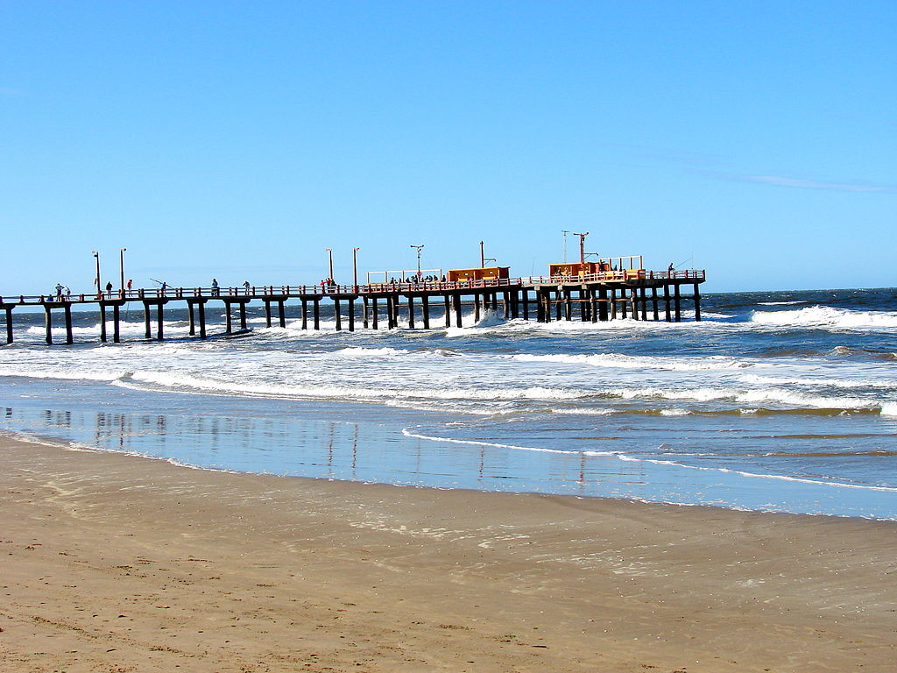
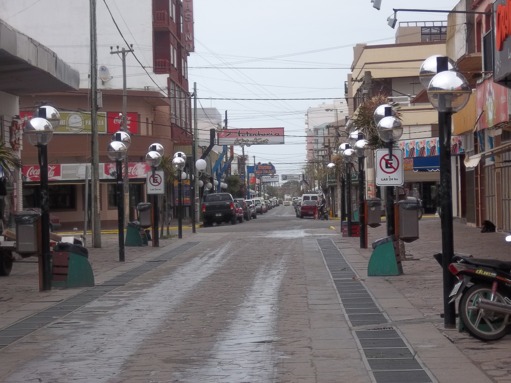

Partido de la Costa
El Partido de La Costa es uno de los 135 partidos de la provincia argentina de Buenos Aires. Forma parte de la quinta sección electoral de la provincia de Buenos Aires El partido cubre todo el borde oriental del cabo San Antonio, limita al norte con la Bahía de Samborombón; al sur, con el Partido de Pinamar; al oeste, con el Partido de General Lavalle y al este, con el mar argentino. Es el municipio más oriental de la provincia de Buenos Aires. Por esa razón es el sitio elegido para el amarre de cables submarinos de telecomunicaciones.

